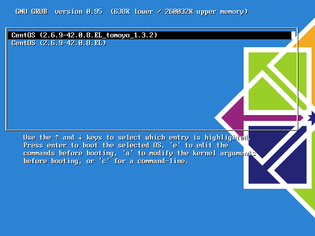
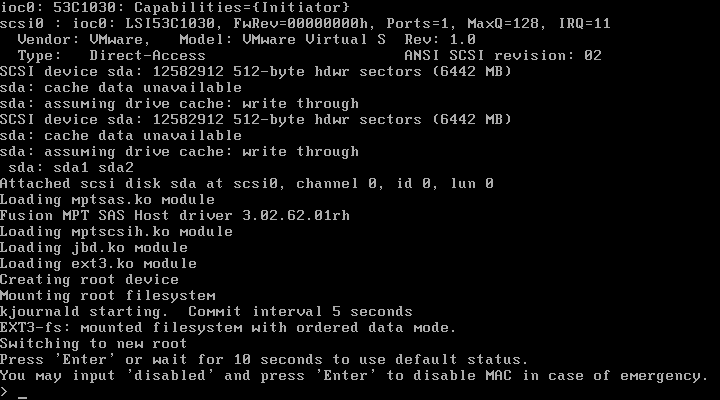
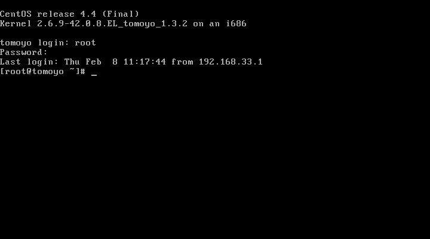
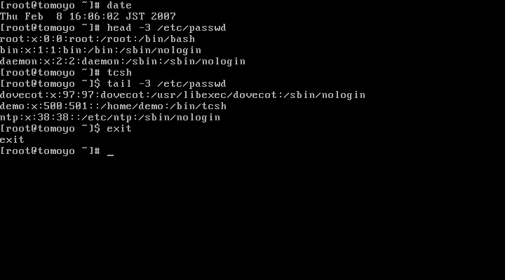
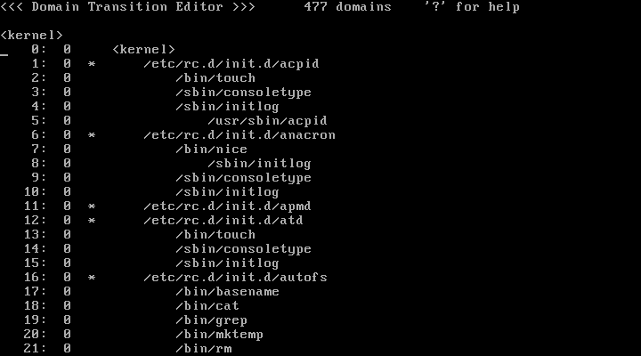
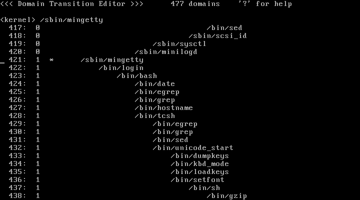
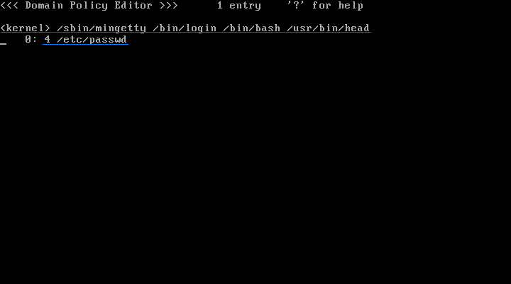
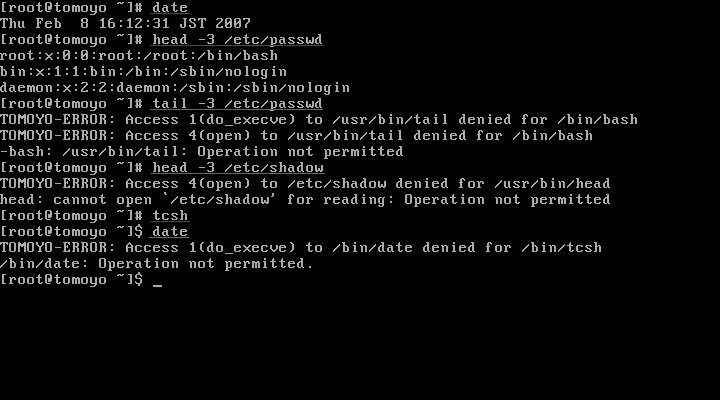

This page explains you how to introduce TOMOYO Linux 1.4.1 on CentOS 4.5 systems. By operating along with this page, you will be able to experience the fundamental functionalities of TOMOYO Linux and configure and operate TOMOYO Linux.
The following is the flow of introduction.
Regarding CentOS, SELinux is enabled by default. TOMOYO Linux itself can coexist with SELinux. But to make troubleshooting easy, we recommend you to disable SELinux.
To disable SELinux, change "SELINUX=" of /etc/selinux/config as follows.
SELINUX=disabled
Reboot the system and run "getenforce" command to make sure SELinux is desabled.
# getenforce
Disabled
TOMOYO Linux is provided in the form of patches to the Linux kernels, and you need to apply these patches and compile. But regarding CentOS 4.5, binary kernel packages are provided and this page uses them.
First, download the binary kernel package.
# wget http://osdn.dl.sourceforge.jp/tomoyo/25544/kernel-2.6.9-55.EL_tomoyo_1.4.1.i586.rpm
Next, install the downloaded package.
# rpm --install kernel-2.6.9-55.EL_tomoyo_1.4.1.i586.rpm
The following entries are appended to /boot/grub/grub.conf if installation finishes successfully.
title CentOS (2.6.9-55.EL_tomoyo_1.4.1)
root (hd0,0)
kernel /vmlinuz-2.6.9-55.EL_tomoyo_1.4.1 ro root=/dev/VolGroup00/LogVol00
initrd /initrd-2.6.9-55.EL_tomoyo_1.4.1.img
Comment out the "timeout=" and "hiddenmenu" lines of /boot/grub/grub.conf so that you will not fail to select TOMOYO Linux's kernel.
#timeout=5
#hiddenmenu
After you have installed TOMOYO Linux kernel, you need to install TOMOYO Linux tools. The TOMOYO Linux tools include programs for managing TOMOYO Linux's policy.
Regarding CentOS 4.5, a binary tools tar ball is provided and this page uses it. We use /root/ccstools/ directory as the location of TOMOYO Linux tools.
# cd /root # wget http://osdn.dl.sourceforge.jp/tomoyo/25544/ccs-tools-1.4.1-i386-CentOS4.5.tar.gz # tar zxf ccs-tools-1.4.1-i386-CentOS4.5.tar.gz
Add the location of TOMOYO Linux tools to the environment variable PATH. If you are using bash, run the following commands.
# echo 'export PATH=$PATH:/root/ccstools' >> ~/.bashrc # source ~/.bashrc
Move the policy loader script (.init) to / directory.
# mv /root/ccstools/.init /
To load TOMOYO Linux's policy automatically upon startup, you need to update the kernel command line. Append "init=/.init" at the "kernel" lines of TOMOYO Linux's kernels in /boot/grub/grub.conf .
title CentOS (2.6.9-55.EL_tomoyo_1.4.1)
root (hd0,0)
kernel /vmlinuz-2.6.9-55.EL_tomoyo_1.4.1 ro root=/dev/VolGroup00/LogVol00 init=/.init
initrd /initrd-2.6.9-55.EL_tomoyo_1.4.1.img
You have installed TOMOYO Linux. Now proceed to configuration.
The default directory for storing TOMOYO Linux's configuration is /etc/ccs/ . You need to create this directory manually.
# mkdir -m 700 /etc/ccs
Since TOMOYO Linux has much functionality, you can selectively enable/disable them using "profiles". All profiles are stored in a single file /etc/ccs/status.txt and you can switch profiles assigned to domains.
Since this page explains only MAC for files, create /etc/ccs/status.txt containing the following entries.
# cat > /etc/ccs/status.txt << EOF 0-COMMENT=-----DISABLED_MODE----- 0-MAC_FOR_FILE=0 0-TOMOYO_VERBOSE=0 1-COMMENT=-----LEARNING_MODE----- 1-MAC_FOR_FILE=1 1-TOMOYO_VERBOSE=0 2-COMMENT=-----PERMISSIVE_MODE----- 2-MAC_FOF_FILE=2 2-TOMOYO_VERBOSE=1 3-COMMENT=-----ENFORCE_MODE----- 3-MAC_FOR_FILE=3 3-TOMOYO_VERBOSE=1 EOF
The syntax of an entry of /etc/ccs/status.txt is shown below.
$profile_number-$topic_name=$control_mode
The leading integer ($profile_number) is the number of profile, the followed word before = ($topic_name) is the name of functionalities and the trailing integer after = ($control_mode) is the control mode.
The $topic_name = COMMENT is just for administrators.
The $topic_name = MAC_FOR_FILE means "MAC for file accesses", and the $control_mode = 0 means disabled, 1 means learning mode, 2 means permissive mode, 3 means enforcing mode.
The $topic_name = TOMOYO_VERBOSE means whether policy violation messages are printed to console or not, and prints if $control_mode = 1 and doesn't print if $control_mode = 0.
The above example has 4 profiles (from 0 to 3), and the purpose of them are shown below.
| profile 0 | Don't apply MAC for file accesses. Don't print policy violation messages on console. |
|---|---|
| profile 1 | Apply MAC for file accesses using learning mode. Don't print policy violation messages on console. |
| profile 2 | Apply MAC for file accesses using permissive mode. Print policy violation messages on console. |
| profile 3 | Apply MAC for file accesses using enforcing mode. Print policy violation messages on console. |
The basic procedure is, generate policy using learning mode (which is defined in profile 1), confirm policy using permissive mode (which is defined in profile 2), and enforce policy using enforcing mode (which is defined in profile 3).
Although TOMOYO Linux can generate policy using profile 1 (learning mode), you need some preparations before using profile 1. The preparations are listed below.
Create /etc/ccs/manager.txt and list up programs that are allowed to update policies. Specifically, list the following 6 programs in /root/ccstools/ directory.
# cat > /etc/ccs/manager.txt << EOF /root/ccstools/loadpolicy /root/ccstools/editpolicy /root/ccstools/setlevel /root/ccstools/setprofile /root/ccstools/ld-watch /root/ccstools/ccs-queryd EOF
TOMOYO Linux has two types of logs, "access granted logs" (access requests that didn't violate domain policy) and "access rejected logs" (access requests that violated domain policy). This page configures to save only "access rejected logs".
To save logs, you can use "ccs-auditd" daemon program included in ccs-tools package. To start ccs-auditd on bootup to save only "access rejected logs", add the following line to /etc/rc.d/rc.local .
# echo "/root/ccstools/ccs-auditd /dev/null /var/log/tomoyo/reject_log.txt" >> /etc/rc.d/rc.local
This script will save "access rejected logs" as /var/log/tomoyo/reject_log.txt . You need to create the directory to save before you run this script.
# mkdir -p /var/log/tomoyo
Before you create policy, you need to define the following 7 types of exceptions.
TOMOYO Linux tools package contains two scripts, make_exception.sh and make_alias.sh, that automatically generate these exceptions.
Run the following commands.
# make_exception.sh > /etc/ccs/exception_policy.txt # make_alias.sh >> /etc/ccs/exception_policy.txt
The execution of make_alias.sh will take long time (may be longer than 10 minutes in some environment).
You have finished all preparations.
Now, boot with TOMOYO Linux kernel.
First, reboot the system.
# reboot
Select the TOMOYO Linux kernel and press 'Enter' key.

The following prompt will appear.

Wait 10 seconds or press 'Enter' key to continue. The exception policy will be loaded and the system starts. After the login prompt appear, log in as root.

Let the TOMOYO Linux's kernel remember the following operations, and let's see any operations that weren't done in the learning mode are denied in the enforcing mode.
Now, change this session to learning mode.
According to Creating profiles, the profile 1 is defined for learning mode. So, assign this profile to /sbin/mingetty and programs invoked by /sbin/mingetty .
# setprofile -r 1 '<kernel> /sbin/mingetty'
This command means
Assign profile 1 to /sbin/mingetty and all programs invoked by /sbin/mingetty .
The /sbin/mingetty is a program that invokes login shell. Thus, by assigning profiles 1 to /sbin/mingetty and programs invoked by /sbin/mingetty, you can let the TOMOYO Linux kernel remember operations after login. Changing profiles takes effect immediately. Now, this session is already in the learning mode.
You have to quote "<kernel> /sbin/mingetty" appropriately, or you may lose the contents of /sbin/mingetty because "<" and ">" are interpreted as redirection command.
Let the kernel remember the 4 operations listed above. All you need to do is do these operations as usual.

You can operate as if the usual Linux, but the TOMOYO Linux kernel is monitoring accesses and generating policies and storing on the memory in the background.
To refer and/or edit generated policy, you can use "editpolicy" in the TOMOYO Linux tools package.
# editpolicy
When you run "editpolicy", the list of process invocation history since the bootup is shown, explaining how programs are invoked until now. TOMOYO Linux calls this invocation chains as "DOMAIN transition tree".

Search for mingetty from this tree. Press 'f' key and enter "mingetty" and press 'Enter' key.

The integer that is on the right side of line number shows profile number currently assigned to the domain. The profile number for /sbin/mingetty and its descendant domains is 1 because you ran earlier "setprofile -r 1 '<kernel> /bin/mingetty'".
You can find the tree for login operation at /bin/login under /sbin/mingetty . Search for /usr/bin/head in that tree. Press 'Enter' at the line of head command, and you will see the following window.

This is the policy generated by the previous operations and it says that
The domain "<kernel> /sbin/mingetty /bin/login /bin/bash /usr/bin/head" (red colored underline)
- can read access of /etc/passwd (blue colored underline)
In TOMOYO Linux, the domain is defined as the history of process invocation represented using absolute pathnames of programs. Each process belongs to single domain, and access permissions are granted to domains.
The granularity of permissions is standard read/write/execute plus detailed write permission such as create, unlink, rename.
Policies are kept on the memory and if they will be lost if you shutdown the system. To save policies currently on the memory onto disk, run the following command.
# savepolicy
Now, let's experience MAC using previously generated policy.
Quit the "editpolicy" with 'q' key and run the following command.
# setprofile -r 3 '<kernel> /sbin/mingetty'
From now on, the domains under /sbin/mingetty are protected by MAC.
Now, let's do the following operations.

Operations with red colored underline in the picture are performed normally because they are operations performed in the learning mode. Operations with blue colored underline are denied.
The logs for denied operations are saved in /var/log/tomoyo/reject_log.txt by ccs-auditd.
#2007-02-08 16:12:38# pid=3523 uid=0 gid=0 euid=0 egid=0 suid=0 sgid=0 fsuid=0 fsgid=0 <kernel> /sbin/mingetty /bin/login /bin/bash 1 /usr/bin/tail #2007-02-08 16:12:38# pid=3523 uid=0 gid=0 euid=0 egid=0 suid=0 sgid=0 fsuid=0 fsgid=0 <kernel> /sbin/mingetty /bin/login /bin/bash 4 /usr/bin/tail #2007-02-08 16:12:45# pid=3524 uid=0 gid=0 euid=0 egid=0 suid=0 sgid=0 fsuid=0 fsgid=0 <kernel> /sbin/mingetty /bin/login /bin/bash /usr/bin/head 4 /etc/shadow #2007-02-08 16:12:48# pid=3550 uid=0 gid=0 euid=0 egid=0 suid=0 sgid=0 fsuid=0 fsgid=0 <kernel> /sbin/mingetty /bin/login /bin/bash /bin/tcsh 1 /bin/date
As you have seen above, by using TOMOYO Linux's MAC for file accesses functionality, you can monitor
in detail.